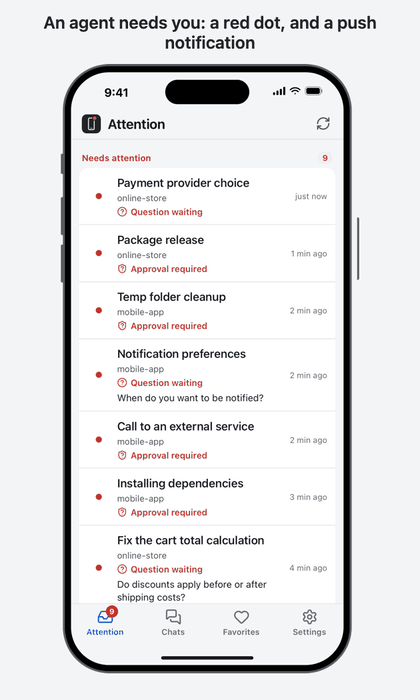
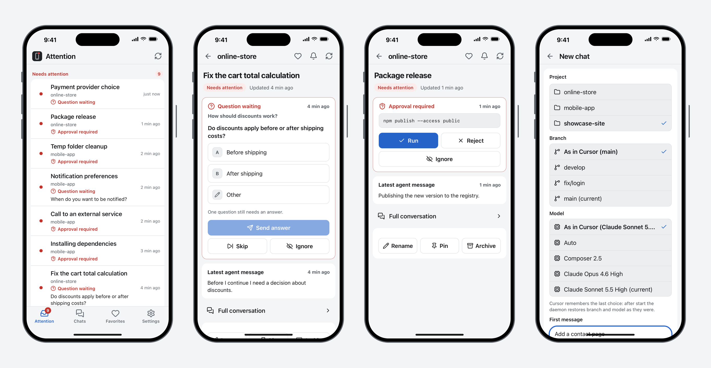

Push notifications
A new question, a command waiting for approval, a finished chat. One notification each, no repeated reminders. Mute a chat or a project, set quiet hours.
Open source · macOS · iPhone
Agents stop and wait: a question, a command to approve, a plan to read. cursor-pocket sends a push notification when that happens and lets you handle it from your iPhone, wherever you are. No cloud, no account.
Unofficial project, not affiliated with Anysphere. Tested on Cursor 3.24.x and 3.25.x.

A new question, a command waiting for approval, a finished chat. One notification each, no repeated reminders. Mute a chat or a project, set quiet hours.
Reply to questions (single choice, multiple choice, free text), approve or reject terminal commands, send messages with images, stop an agent, start a new chat.
A small Node daemon on your Mac, reachable only through your own Tailscale network. The Cursor database is opened read-only. Chats and keys are never logged.
Chats grouped by project in the order of the Agents Window sidebar, with the same red dot for "needs attention". Read any conversation, page by page.
English, Italian, Spanish, French, German, Portuguese, Japanese and Simplified Chinese. Notifications follow the language of each device.
No dependencies and no build step: Node 22 and a plain web app. Try it first with a built-in demo that never touches your data.

You need a Mac with Cursor 3.x, Node 22.13 or newer, and Tailscale on the Mac and on the iPhone. Try the demo first:
git clone https://github.com/fedebartoli/cursor-pocket
cd cursor-pocket/daemon
npm run demo # fake Cursor with invented chatsThen run it for real:
npm start # listens on 127.0.0.1:8787 only
npm run pair # prints a one-time pairing code
tailscale serve --bg 8787 # HTTPS inside your tailnet
tools/cursor-cdp.sh # optional: lets you act from the phoneOn the iPhone, open the HTTPS address in Safari, choose Share, Add to Home Screen, then enter the pairing code. The full setup guide covers every step.
Yes, for the local chats of the Agents Window. You get push notifications and can answer questions, approve commands, send messages and start chats.
No. There is no cloud service and no account. The daemon listens on localhost and is exposed only through tailscale serve, inside your own tailnet. Never use Tailscale Funnel with it.
No. It is unofficial and not affiliated with Anysphere. It relies on Cursor internals that can change without notice, so after a Cursor update a small adjustment may be needed.
Cloud agents are not covered: it targets local chats on macOS. The app is built and tested for iPhone, where push notifications need iOS 16.4 or newer and the app on the Home Screen.
The default is conservative: each device pairs with its own revocable session, approvals need a second tap to confirm, and the debug port that enables actions is opt-in. Read the security notes before exposing anything.